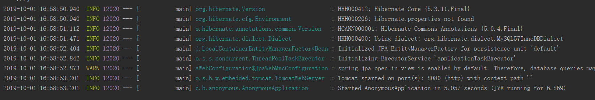
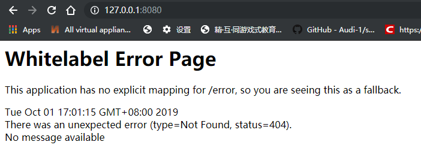
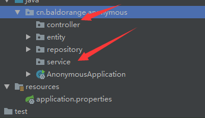
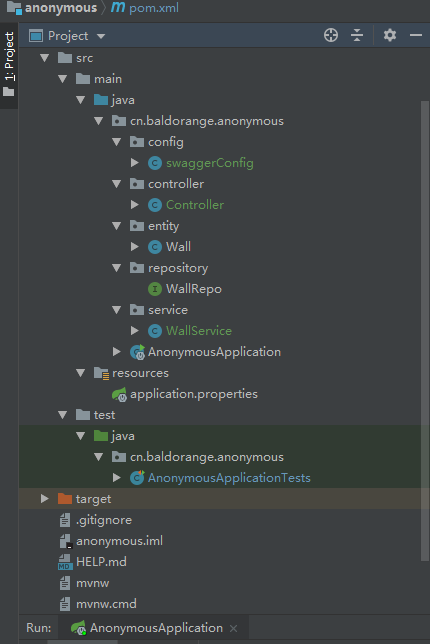
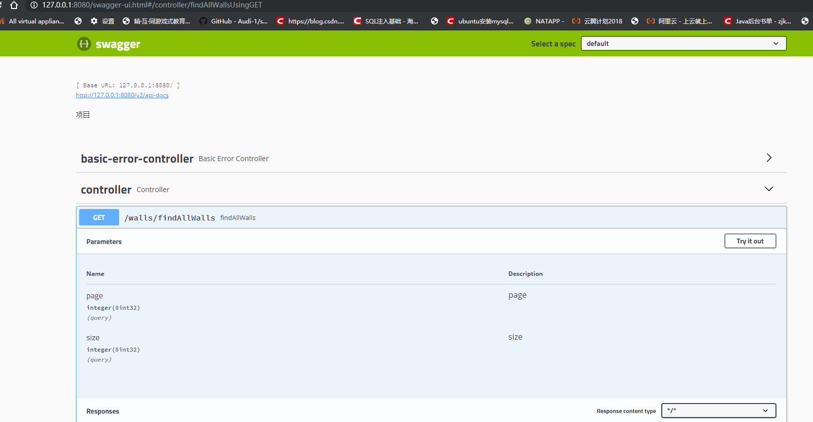
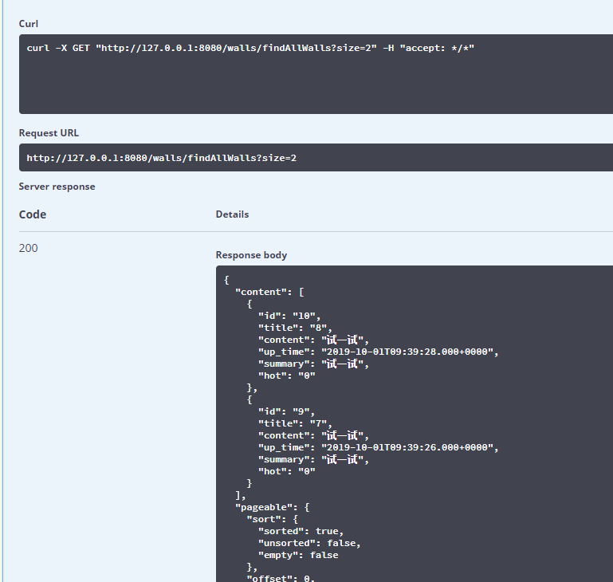
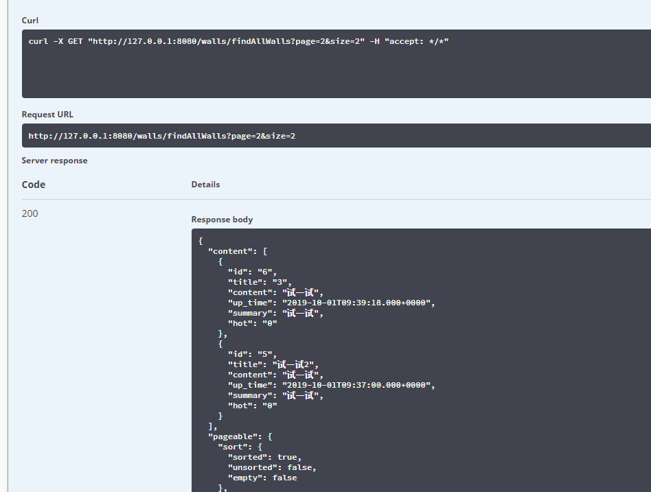
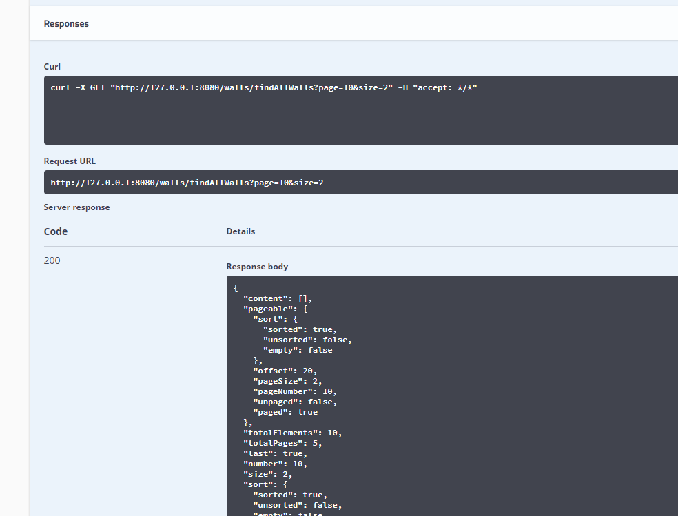
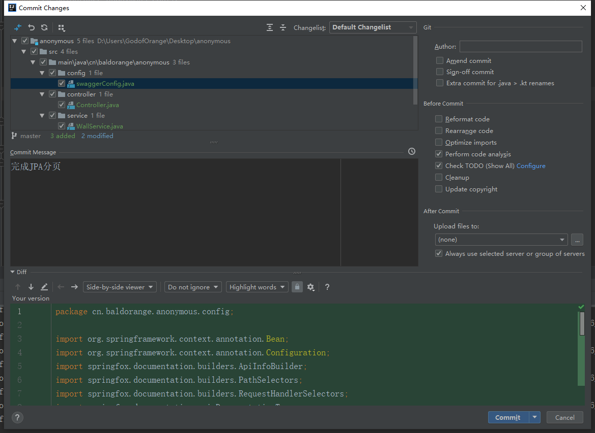
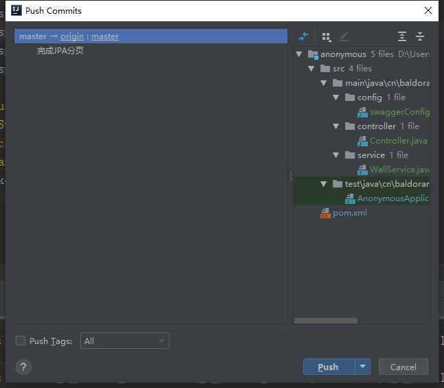

原文连接:https://www.cnblogs.com/godoforange/p/11615740.html
今天我们来使用JPA做分页项目并且做讲解
如果是新来的朋友请回上一篇
上一篇:微项目(一)
maven整合
在pom文件的dependencies依赖中导入以下依赖
<dependency>
<groupId>org.springframework.boot</groupId>
<artifactId>spring-boot-starter-web</artifactId>
</dependency>然后重启项目

我们可以看到项目跑起来后运行出来一个tomcat

我们可以看到这里出现了404错误。虽然是错误但是出来这个就对了。
下面我们来配置对项目的增和查
在做增查之前，我们需要新建俩个包。

下面我们逐一填东西。
service
service是逻辑层，包括数据处理的方向，和过程。
这里第一个方法好理解，就是向数据库内添加文章。
第二个方法查代表的含义是将数据库分页，
为什么这么做呢？很简单，如果数据过多无法展示我们只能这么做。按照ID倒序排列。
package cn.baldorange.anonymous.service;
import cn.baldorange.anonymous.entity.Wall;
import cn.baldorange.anonymous.repository.WallRepo;
import org.springframework.beans.factory.annotation.Autowired;
import org.springframework.data.domain.Page;
import org.springframework.data.domain.PageRequest;
import org.springframework.data.domain.Sort;
import org.springframework.stereotype.Service;
import java.util.Date;
@Service
public class WallService {
@Autowired
WallRepo wallRepo;
/**
* 增加吐槽
* @param title
* @param content
* @return
*/
public Boolean saveNewWall(String title,String content){
try {
String summary = "";
if (content.length() > 100)
summary = content.substring(0, 99);
else summary = content;
Wall wall = new Wall(title, content, new Date(), summary, "0");
wallRepo.save(wall);
return true;
}catch (Exception e){
return false;
}
}
/**
* 获得匿名墙的所有文章
* @return
*/
public Page<Wall> findAllWalls(Integer page,Integer size){
if(page == null) page = 0;
if(size == null) size =10;
PageRequest pageable = PageRequest.of(page, size, Sort.Direction.DESC, "id");
return wallRepo.findAll(pageable);
}
}
controller
至于Controller层就比较简单了，
但是从servlet过来的同学要注意了，@PutMapping这里可能会给你们带来疑惑，实际上现在http请求常用的不仅仅是get和post 还有 put delete 等等我们没见过的，规定是人定的，人也能改。
package cn.baldorange.anonymous.controller;
import cn.baldorange.anonymous.entity.Wall;
import cn.baldorange.anonymous.service.WallService;
import org.springframework.beans.factory.annotation.Autowired;
import org.springframework.data.domain.Page;
import org.springframework.web.bind.annotation.*;
@RestController
@RequestMapping("/walls")
public class Controller {
@Autowired
WallService wallService;
@PutMapping("/saveNewWall")
public Boolean saveNewWall(@RequestParam String title,@RequestParam String content){
return wallService.saveNewWall(title,content);
}
@GetMapping("/findAllWalls")
public Page<Wall> findAllWalls(Integer page, Integer size){
return wallService.findAllWalls(page,size);
}
}
配置好后我们启动后访问这里：
http://127.0.0.1:8080/walls/findAllWalls
这就是我们所见到的json数据

虽然很乱，但是我们不难发现这里面有我们数据库中的内容。还有一些其他的东西。
我们下面就需要配置接口文件了。
swagger
相信无论是前端还是后端开发，都或多或少地被接口文档折磨过。前端经常抱怨后端给的接口文档与实际情况不一致。后端又觉得编写及维护接口文档会耗费不少精力，经常来不及更新。其实无论是前端调用后端，还是后端调用后端，都期望有一个好的接口文档。但是这个接口文档对于程序员来说，就跟注释一样，经常会抱怨别人写的代码没有写注释，然而自己写起代码起来，最讨厌的，也是写注释。所以仅仅只通过强制来规范大家是不够的，随着时间推移，版本迭代，接口文档往往很容易就跟不上代码了。
首先将maven中引入swagger
<dependency>
<groupId>io.springfox</groupId>
<artifactId>springfox-swagger2</artifactId>
<version>2.9.2</version>
</dependency>
<dependency>
<groupId>io.springfox</groupId>
<artifactId>springfox-swagger-ui</artifactId>
<version>2.9.2</version>
</dependency>然后我们新建个包最终目录如下：

swaggerConfig配置文件如下：
package cn.baldorange.anonymous.config;
import org.springframework.context.annotation.Bean;
import org.springframework.context.annotation.Configuration;
import springfox.documentation.builders.ApiInfoBuilder;
import springfox.documentation.builders.PathSelectors;
import springfox.documentation.builders.RequestHandlerSelectors;
import springfox.documentation.spi.DocumentationType;
import springfox.documentation.spring.web.plugins.Docket;
import springfox.documentation.swagger2.annotations.EnableSwagger2;
@Configuration
@EnableSwagger2
public class swaggerConfig {
@Bean
Docket docket(){
return new Docket(DocumentationType.SWAGGER_2)
.select()
.apis(RequestHandlerSelectors.any())
.paths(PathSelectors.any())
.build()
.apiInfo(new ApiInfoBuilder().description("项目").build());
}
}OK我们现在重启项目：
并访问这里

OK我们现在可以使用swagger进行接口测试了，炒鸡棒。
分页技术
数据库分页也是在数据库里写查询语句，不同的是查询的都是指定条数到指定条数的数据，不是一次性把数据全查出来。
当size=2时，返回如下

当size=2,page=2时，返回如下

当size或者page越界时，返回如下

这里的分页后的字段描述如下：
{
"content": [{}], // 数据列表
"last": true, // 是否最后一页
"totalPages": 1, // 总页数
"totalElements": 1, // 数据总数
"sort": null, // 排序
"first": true, // 是否首页
"numberOfElements": 1, // 本页数据条数
"size": 10, // 每页长度
"number": 0 // 当前页序号
}不难看出，JPA的分页机制特别好用，简直不要太爽。
git推上去


OK今天的活就完工了。